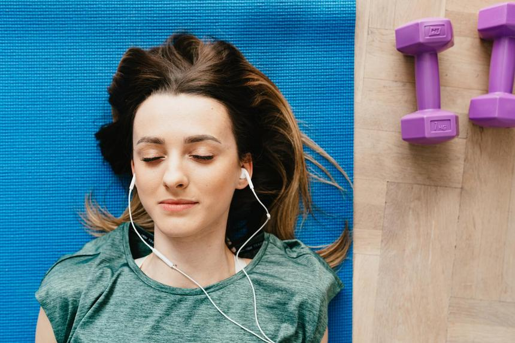

Музыка делает нас счастливее
Сложное сочетание мелодии, гармонии и ритма активирует множество отделов мозга, отвечающих за память, восприятие, познание, речь и моторику. И сегодня, когда накапливается все больше исследований о неразрывной связи психического и физического здоровья, можно прогнозировать, что музыка станет верным помощником врача. Несколько результатов научных исследований доказали следующее.
Установлено, что всего 15 минут любимой музыки в день повышают выработку эндорфинов в организме. Послушайте свои любимые мелодии, для того чтобы поднять себе настроение и получить прилив сил.
Музыка повышает способность людей к бегу
Если вы любитель утренних пробежек, то, наверное, уже испытывали этот эффект. Бежать становится легче, если слушать ритмичную музыку. Спортсмены, которые слушали музыку, преодолевали дистанцию быстрее, чем их соперники, бежавшие в тишине. Если вы хотите улучшить свои спортивные достижения — слушайте мелодии, которые вас вдохновляют.
Музыка снижает стресс
При прослушивании любимых музыкальных произведений у человека снижается выработка гормона стресса кортизола. Это значит, что музыка поможет снизить вероятность развития болезней сердца, ожирения, диабета, депрессии и тревоги. Повышается и устойчивость к инфекционным заболеваниям. Поставьте любимые песни в сложный день, подпевайте и постукивайте ногами в такт, чтобы получить больший эффект.
Музыка помогает лучше спать
Успокаивающая классическая музыка, такая как произведения Шопена, Моцарта и Дебюсси, поможет быстрее заснуть и улучшить качество сна.
Музыка помогает меньше есть
Музыка помогает меньше есть. Мягкое освещение и тихая фоновая музыка во время еды поможет потребить меньше калорий и получить больше удовольствия от вкуса.
Музыка уменьшает боль
Музыка помогает вспоминать
Музыка стимулирует отделы мозга, которые остались здоровыми у пациентов с болезнью Альцгеймера и другими возрастными деменциями. Если у вас есть близкие с этой болезнью — попробуйте поставить им музыку их молодости.
Музыка помогает восстановиться пациентам после инсульта
Пациенты, перенесшие инсульт, которые ежедневно слушали выбранную ими музыку, восстанавливались гораздо быстрее, чем те, которые слушали аудиокниги или не получали материала для прослушивания. Если кто-то из близких перенес инсульт — принесите ему любимые записи.
Музыка повышает успеваемость и улучшает умственные способности
Дети, которые брали уроки игры на клавишных или пения в группах, получали большие баллы школьной успеваемости и тестов на интеллект. Родителям стоит поощрять в своих детях желание петь или играть на музыкальных инструментах.
Музыка сохраняет деятельность мозга и в преклонном возрасте
Пожилые люди, профессионально занимавшиеся музыкой, демонстрировали более высокие баллы в тестах на мышление и память, чем их ровесники, не имеющие отношения к музыке. Учиться играть на музыкальных инструментах можно в любом возрасте.
Музыка помогает недоношенным детям
Колыбельные песни и звук инструмента, имитирующего звуки материнского сердцебиения, улучшали сон и аппетит у детей, родившихся раньше срока.